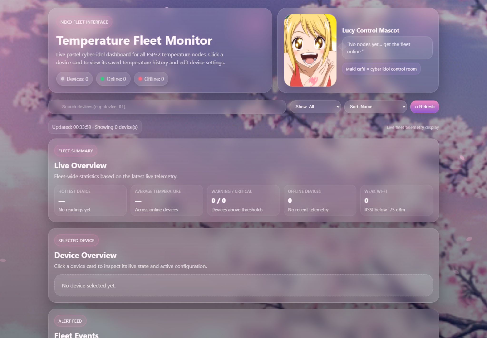

P / 01Final-year project

Temperature fleet-management platform
Designed and built a low-cost IoT platform for monitoring and managing multiple wireless temperature-sensing nodes through a browser dashboard.
- ESP32-S3 and LM35 nodes with device identity, temperature, RSSI and online/offline telemetry
- HTTP-to-MQTT bridge created after direct MQTT port 1883 timed out on eduroam
- Node.js/Express backend with SQLite history, events, Socket.IO updates and remote configuration
- Battery-powered stripboard prototype housed in a designed, printed and test-fitted enclosure
ESP32-S3Node.jsSQLiteHTTP / MQTTSocket.IOKiCad